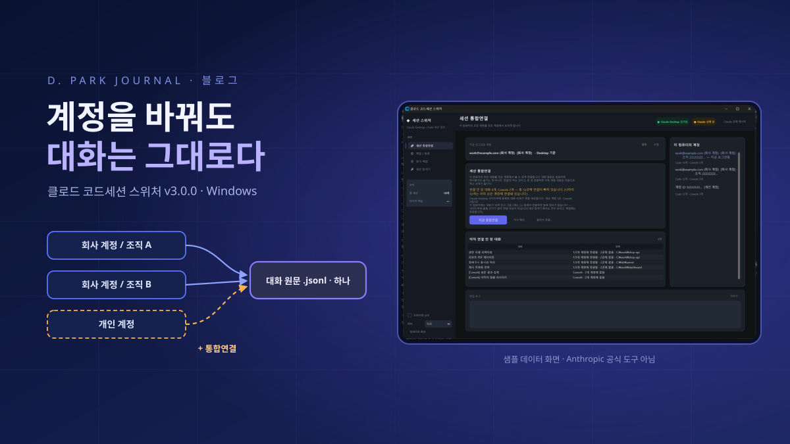

클로드 코드세션 스위처
Claude 계정을 여러 개 쓰면 계정을 바꿀 때마다 어제까지 쓰던 대화가 사이드바에서 사라진다. 서버가 막는다는 통념을 믿고 한동안 포기했지만, 직접 뜯어보니 대화 원문은 컴퓨터에 하나뿐이었고 계정 폴더에 있던 것은 그 파일을 가리키는 포인터일 뿐이었다. 그 발견 하나에서 출발해, 모든 대화를 모든 계정에 연결하고 컴퓨터 단위로 백업해 다른 PC로 옮기는 Windows 도구를 만들었다. 무엇을 하는 도구인지, 어디에 쓰는지, 그리고 만들면서 낸 사고에서 무엇을 배웠는지 적는다.

.jsonl)은 컴퓨터에 하나뿐이고, 계정 폴더에 있는 것은 그 파일을 파일명으로 가리키는 작은 등록 파일, 즉 포인터뿐이다. 클로드 코드세션 스위처는 이 구조를 이용해 ① 모든 대화를 모든 계정에 버튼 한 번으로 연결하고(통합연결) ② 계정이 아니라 컴퓨터 단위로 대화를 백업해 다른 PC로 옮기며 ③ 대화와 Cowork을 서로 다른 일정으로 정기 백업하고 ④ 이 컴퓨터의 모든 대화를 한 목록에서 검색·열람하게 해 준다. 등록 파일은 새로 만들지 않고 원본 바이트 그대로 옮기고, 복원은 덮어쓰기가 아니라 줄 단위 합치기가 기본이다. 자동 검증 172항목을 통과했지만 다른 컴퓨터 왕복은 아직 실사용 검증 전이다. Windows 10/11 전용이며 Anthropic 공식 도구가 아니다.
계정을 바꾸면 어제의 대화가 사라진다
Claude를 계정 하나로만 쓰는 사람은 이 글의 문제를 겪을 일이 없다. 그런데 나처럼 회사 계정과 개인 계정을 오가고, 회사 계정 안에서도 조직(organization)이 둘 이상인 환경에서 Claude Desktop과 Claude Code를 매일 쓰다 보면 아주 구체적인 불편이 쌓인다. 계정을 바꾸는 순간 사이드바의 세션 목록이 통째로 바뀐다. 어제 오후 내내 붙잡고 있던 결제 웹훅 재시도 로직 대화가, 다른 계정으로 로그인하면 흔적도 없이 사라진다. 다시 원래 계정으로 돌아가면 멀쩡히 거기 있다.
처음에는 “계정이 다르니 당연하지” 하고 넘겼다. 그런데 이 일이 반복되자 질문이 생겼다. 대화는 내 컴퓨터에 저장되어 있을 텐데, 왜 다른 계정에서는 보이지 않는가. 그리고 컴퓨터를 바꿀 때는 이 대화들을 어떻게 가져가는가. 증상을 정리해 보니 네 가지였다.
| 겪은 증상 | 실제로 일어나고 있던 일 |
|---|---|
| 계정을 바꿨더니 어제까지 쓰던 대화가 사이드바에서 사라졌다 | 대화 파일은 그대로 있는데, 지금 계정 폴더에 그 대화를 가리키는 등록 파일이 없을 뿐 |
| 컴퓨터를 바꾸면 대화를 가져갈 방법이 없다 | 대화·등록 정보·Cowork 데이터가 세 군데에 흩어져 있어 손으로 복사하기가 사실상 불가능 |
| 어느 계정에 무엇이 있는지 모르겠다 | 계정을 바꿔 가며 눈으로 세는 수밖에 없음 |
| 백업했다가 복원하면서 최신 대화를 덮어썼다 | 단순 파일 복사는 “더 진행된 쪽”을 구분하지 못함 |
이 네 가지를 풀려고 만든 것이 클로드 코드세션 스위처(Claude Session Switcher)다. Windows용 데스크톱 앱이고, Python과 customtkinter로 만들었으며, MIT 라이선스로 GitHub에 공개했다. 2026년 9월 29일에 공개판 v3.0.0을 올렸다. 이 글은 그 도구가 무엇이고, 무엇이 다른지, 어떤 상황에 쓰면 좋은지, 그리고 만들면서 어떤 사고를 냈고 거기서 무엇을 배웠는지를 한 번에 정리한 기록이다. 먼저 분명히 해 둔다 — 이것은 Anthropic의 공식 도구가 아니다. Claude, Claude Desktop, Claude Code는 Anthropic의 제품이고, 이 앱은 그 로컬 저장 구조를 관찰해서 만든 개인 프로젝트다.
Chapter 2. 핵심 발견대화는 하나, 계정은 포인터일 뿐이었다
이 프로젝트는 한동안 잘못된 전제 위에서 굴러갔다. 다른 계정으로 옮긴 Claude Code 세션을 열면 화면에 “이 세션은 다른 조직에 속할 수 있습니다”라는 문구가 떴다. 이 문장을 본 사람은 자연스럽게 세 가지를 추론한다. 앱이 세션의 소유 계정을 알고 있다. 그것을 서버에 물어 검증한다. 그러니 로컬 파일을 아무리 만져도 소용없다. 커뮤니티의 다수가 그렇게 결론 내렸고, 관련 GitHub 이슈를 올린 사람도 그렇게 적었으며, 나도 한동안 그렇게 믿었다.
결론을 뒤집은 방법은 지루했다. Claude Desktop의 Electron 번들(app.asar)을 추출해 세션을 목록에 올리고 여는 경로를 정독했고, 실제 PC에 쌓인 파일을 표본이 아니라 전부 읽었다. 그랬더니 저장 구조가 생각과 전혀 다른 모양이었다.
.jsonl)은 컴퓨터에 딱 하나만 있고, 계정 폴더의 local_<sessionId>.json은 그 파일을 파일명으로 가리키는 포인터다. 개인 계정 폴더에 포인터가 없으면 그 계정의 사이드바에만 대화가 “없어” 보인다. README의 포인터 관계도를 사이트용으로 다시 그렸다.정리하면 이렇다. Claude Code 세션 하나는 서로 다른 두 장소에 쪼개져 저장된다. 하나는 %APPDATA%\Claude\claude-code-sessions\<계정ID>\<조직ID>\ 아래의 등록 파일로, 사이드바의 한 줄이 이 파일 하나에 대응한다. 다른 하나는 %USERPROFILE%\.claude\projects\ 아래의 전사(transcript) 파일, 즉 실제 대화 본문이다. 앞의 것은 계정별로 나뉘어 있고, 뒤의 것에는 계정 개념이 아예 없다.
결정적인 사실은 등록 파일 안에 계정 ID도 조직 ID도 들어 있지 않다는 것이었다. 실사용 PC의 등록 파일 143개를 전수로 읽어 확인했다. 앱이 “이 세션이 누구 것인가”를 판단하는 근거는 오직 파일이 놓인 폴더의 위치뿐이다. 계정/조직 UUID로 된 두 단계 폴더는 자물쇠가 아니라 주소였다. 로그인한 계정에 해당하는 주소를 읽을 뿐, 그 안의 파일이 누구 것인지는 묻지 않는다. 대화 원문 쪽도 확인했다. 전사 984개 파일, 1.10GB를 전 바이트 스캔했더니 조직 귀속을 나타내는 키는 0건이었다.
여기서 두 가지가 곧바로 따라 나온다. 첫째, “대화를 계정 사이에 옮긴다”는 말 자체가 틀렸다. 옮길 것이 없다. 빠진 계정 폴더에 포인터만 심으면 된다. 그래서 이 기능의 이름을 통합연결로 지었다. 둘째, 한 번 연결하면 끝이다. 어느 계정에서 그 대화를 이어 가든 원문 파일 하나가 자랄 뿐이라, 다른 계정에서도 최신 내용이 자동으로 보인다. 다시 옮길 일이 생기지 않는다.
“다른 조직” 문구의 반전 — 그리고 정직한 유보
그렇다면 그 문구는 무엇이었나. 세션 열기 경로를 따라가 보면 listCliSessions, readCliTranscript, resumeCliSession까지 전부 로컬 파일 입출력이고 네트워크 호출이 없다. 네이티브 쪽이 실패를 보고할 때 쓰는 사유는 running · liveness_unknown · workspace_untrusted · folder_missing · failed 다섯 개뿐이고, “조직 불일치”에 해당하는 코드는 없다. 존재하지 않는 코드는 반환될 수 없다. 그래서 나는 그 문구를, 다른 이유로 실패했을 때 웹 프런트가 “아마 이거겠지” 하고 띄우는 추측성 폴백 안내라고 본다.
실제로 세션이 안 열리는 원인은 거의 항상 저 다섯 개 중 하나였다. 흔한 것은 그 PC에 작업 폴더가 없는 경우(folder_missing)나 작업 폴더가 신뢰 목록에 없는 경우(workspace_untrusted)라고 짐작하지만, 어느 것이 가장 잦은지는 통계로 확인하지 않았다. 문구를 증거로 착각한 것이 오진의 핵심이었다는 점만은 분명하다.
화면 네 개, 버튼 하나
스위처는 이 발견을 그대로 기능으로 옮긴 도구다. 화면은 네 개다.
| 화면 | 하는 일 |
|---|---|
| 세션 통합연결 | 버튼 하나. 모든 계정 폴더를 훑어 아직 연결 안 된 대화를 전부 찾아 자동 연결한다(멱등). |
| 백업 / 복원 | 계정이 아니라 컴퓨터 단위. 대화를 골라 zip으로 내보내고, 다른 컴퓨터에서 가져온다. 복원은 줄 단위 합치기가 기본. |
| 정기 백업 | 대화(Code)와 Cowork을 서로 다른 일정으로 자동 백업한다. |
| 세션 탐색기 | 이 컴퓨터의 모든 대화를 계정 구분 없이 한 목록으로 검색·미리보기·전체보기·마크다운 저장. |

통합연결 화면은 숫자 세 개를 일부러 구분해서 보여 준다. 이 컴퓨터의 대화 전체, 그중 Claude Desktop에 등록되어 연결 대상이 되는 것, 그리고 등록 정보가 없어 연결 대상이 아닌 것. 이 셋이 섞이면 “미연결 N개”라는 숫자를 믿을 수 없게 된다. 실제로 한 번 섞였고, 그때 실사용 환경에서 미연결 86건 중 78건이 허수로 잡혔다. 그 이야기는 7장에서 다시 한다.
무엇이 다른가
① 통합연결 — 방향이 없는 합집합, 그리고 멱등
처음 설계는 “마스터 계정을 하나 골라 나머지 계정 전부에 세션을 뿌리는” 배포 모델이었다. 그러다 사용자로서의 내가 한 말이 설계를 뒤집었다. 배포가 필요 없다, 그냥 연결만 해 주면 되는 것이다. 지금의 통합연결은 방향이 없다. 모든 계정의 합집합을 만들고, 각 계정에서 빠진 곳만 채운다. A 계정에만 있던 대화도, B 계정에만 있던 대화도 한 번에 전부 연결된다. 그리고 멱등이다. 이미 연결된 것은 건너뛰므로, 새 대화가 생기면 그냥 다시 누르면 된다.
② 계정이 아니라 컴퓨터 단위의 백업
백업 화면에는 계정 선택이 없다. 이것도 처음에는 있었다가 뺀 것이다. 대화 원문이 컴퓨터에 하나뿐이라면 백업의 단위도 계정이 아니라 컴퓨터 안의 대화여야 한다. 계정 단위로 백업하면 어느 계정에도 등록되지 않은 대화가 통째로 빠진다. 개발 PC에서 실측했을 때 대화 46개 중 8개가 어느 계정에도 등록되어 있지 않았다. 계정 기준 백업이었다면 이 8개는 영영 빠졌을 것이다.
백업 파일 안에는 등록 파일을 계정 수만큼 담지 않고 대표 하나만 담는다. 복원이 끝나면 통합연결이 나머지 계정에 알아서 뿌리기 때문이다.
claude_sessions_20260929_170717.zip ├── manifest.json ← 무엇이 들어 있는지(제목·크기·개수) ├── transcripts/<cliSessionId>.jsonl ← 대화 원문 ├── sidecars/<cliSessionId>/… ← 그 대화의 보조 기록·도구 결과 ├── records/<cliSessionId>.json ← 대표 등록 파일 1개 (원본 바이트 그대로) └── cowork/local_<uuid>.json + local_<uuid>/
③ 등록 파일은 새로 만들지 않고 “바이트 그대로”
포인터만 심으면 된다고 해서 포인터를 새로 만들어도 되는 것은 아니다. 원본 등록 파일에는 제목, 생성·최종 활동 시각, 작업 폴더, 보관 여부, 포크 관계 등 24~32개 필드가 있다. 밖에서 알아낼 수 있는 정보로 재구성할 수 있는 필드는 많아야 8개다. 합성하면 나머지 16~24개가 기본값으로 날아가고, 파일명(sessionId)을 새로 발급하면 forkedFromSessionId로 이어진 포크 체인이 끊긴다. 앱은 부모를 그 ID로 직접 조회하고 다시 매핑해 주는 코드가 없기 때문이다.
등록 파일 안에 바꿔야 할 계정 필드가 애초에 없으니 답은 간단했다. 파싱하지도, 다시 직렬화하지도 않고 원본 파일을 파일명까지 그대로 복사한다. 필드의 의미를 전부 이해하지 못해도 된다. 모르는 필드를 보존하는 가장 확실한 방법이 바이트 복사이기 때문이다.
④ 복원은 덮어쓰기가 아니라 합치기가 기본
복원하려는 대화가 이 컴퓨터에서 이미 더 진행되어 있을 수 있다. 그때 단순히 덮어쓰면 최신 대화가 사라진다. 예전 버전에서 실제로 그랬다. 그래서 지금은 같은 대화가 있고 내용이 다르면 사용자에게 먼저 묻고, 기본값은 줄 단위 합치기다. 어느 쪽도 잃지 않는다. 덮어쓰기는 항목마다 사용자가 직접 체크한 것만 수행하고, 체크 창에 “지금 이 컴퓨터 N줄 · 백업 M줄”을 보여 줘 판단 근거를 준다.

⑤ 대화와 Cowork을 따로 도는 정기 백업
대화는 자주 조금씩 바뀌고, Cowork 작업 폴더는 크고 뜸하게 바뀐다. 한 일정으로 묶으면 둘 중 하나는 반드시 어긋난다. 그래서 정기 백업은 두 종류를 완전히 다른 일정으로 돌린다. 방식은 세 가지다. N분마다 확인하는 수시 감시, “일과 끝나고 한 번” 같은 매일 정해진 시각, 그리고 19:00~08:00처럼 자정을 넘기는 구간도 지원하는 지정 시간대에만. 여기에 요일 선택, “변경이 있을 때만”, “마지막 변경 후 N분 조용해지면”이 공통으로 붙는다. 마지막 옵션이 의외로 중요하다. 한창 대화 중일 때 1GB 복사를 시작하면 사용자가 그걸 체감한다.

이 판정 로직은 시계도 파일도 만지지 않는 순수 함수로 분리했다. 현재 시각과 마지막 실행 시각, 마지막 변경 시각을 인자로 받아 “지금 돌릴지”만 돌려준다. 덕분에 “밤 11시에 제대로 도는가”를 밤 11시까지 기다리지 않고 검증할 수 있고, 실제로 34개 항목으로 요일·시간대·자정 넘김·조용해질 때까지 기다리기·종류별 독립을 확인한다. 백업이 실패하면 기준점을 올리지 않는다. 올려 버리면 “변경 없음”으로 판정되어 영영 재시도하지 않기 때문이다.
⑥ 계정 선택이 없는 세션 탐색기
탐색기는 이 컴퓨터의 모든 대화를 한 목록으로 보여 준다. 제목·작업 폴더로 검색하고, 미리 보고, 전체 대화를 열어 보고, 마크다운으로 저장한다. 여기에도 계정 선택이 없다. 처음에는 있었는데, 계정을 고르면 대화 46개 중 일부만 보여서 “이 컴퓨터의 모든 대화를 찾는다”는 탐색기의 목적과 정반대가 됐다. 계정별 연결 상태는 통합연결 화면이 보여 주면 된다.

⑦ 무엇을 절대 하지 않는가 — fail-closed 안전 설계
이 도구는 남의 대화 기록을 만지는 물건이라, 기능보다 “하지 않는 것”의 목록이 더 중요하다고 생각했다. 지금 지키는 원칙은 다음과 같다. 대부분이 실제 사고를 겪고 나서 생긴 규칙이다.
| 원칙 | 이유 |
|---|---|
| 대화 파일을 지우지 않는다 | 파일을 지우는 곳은 “오래된 백업 정리” 하나뿐 |
| 대상 계정이 자기 원본을 갖고 있으면 손대지 않는다 | 예전 버전에서 이 방어가 없어 원본이 조용히 지워졌다 |
| 복원은 합치기가 기본 | 백업보다 최신인 대화를 잃지 않기 위해 |
| 이미 있는 보조 기록은 덮어쓰지 않는다 | 이 컴퓨터에서 이어 쓴 기록을 지키기 위해 |
| Claude Desktop이 만든 적 없는 폴더를 지어내지 않는다 | 연결 대상은 Code 폴더가 있는 계정/조직 쌍으로 한정 |
| 앱을 켜자마자 백업하지 않는다 | 켤 때마다 백업이 쌓여 보관 개수를 밀어내는 것을 막기 위해 |
여기에 한 가지 태도가 더 있다. 되돌릴 수 없는 쓰기 전에는 스냅샷을 남기고, 스냅샷 자체가 실패하면 그 작업을 하지 않는다. 백업이 안 되면 작업도 안 한다는 fail-closed 원칙이다. 또 이 도구는 로컬 파일만 다룬다. 네트워크로 나가는 것은 앱 업데이트 확인뿐이다.
⑧ 172개 자동 검증과 실데이터 실측
테스트는 여섯 개 스크립트, 합계 172항목이다. 마지막 줄에 FAILS: []가 나오면 통과다.
| 스크립트 | 항목 | 무엇을 보는가 |
|---|---|---|
t_engine.py | 57 | 연결·백업·복원·충돌 판정·종류 필터·연결 대상 판정·보조 기록 |
t_schedule.py | 34 | 정기 백업 판정(요일·시간대·자정 넘김·조용해질 때까지·종류별 독립) |
t_ui_flows.py | 55 | 네 화면을 실제로 띄워 전체 흐름 + 대량 목록 성능 |
t_app_boot.py | — | 앱 전체 부팅과 화면 배치 |
t_real_backup.py | 17 | 실사용 데이터로 진짜 백업(읽기는 실데이터, 쓰기는 임시 폴더만) |
t_real_ui_speed.py | 9 | 실사용 데이터로 선택 창 열기 속도(프리즈 회귀) |
격리 테스트는 import 전에 환경변수를, import 후에는 각 모듈이 들고 있는 경로 상수를 전부 임시 폴더로 돌려놓고 assert로 확인한 다음에야 돈다. 실데이터 테스트는 읽기만 하고, 백업은 임시 폴더로만 내보내며, 복원은 절대 하지 않는다. 실사용 데이터로 진짜 백업을 돌린 결과는 이랬다.
| 항목 | 값 |
|---|---|
| 대상 | 대화 49개 · Cowork 20개 · 보조 기록 2,018개 |
| 원본 합계 → zip 결과 | 1,115 MB → 896 MB |
| 소요 시간 | 64초 |
| 대화 원문 일치 | 바이트 동일 |
| 계정 폴더 변화 | 파일 추가·삭제 0 |
| 대화 선택 창 열기 | 1,015개 기준 28초 이상 → 0.41초 |
이럴 때 쓴다
회사 계정과 개인 계정을 오가는 개발자. 가장 흔한 경우다. 오전에는 회사 계정으로 사내 저장소 작업을 하고, 저녁에는 개인 계정으로 사이드 프로젝트를 하는데, 같은 컴퓨터의 같은 작업 폴더에서 이어지는 대화가 계정마다 따로 보인다. 통합연결을 한 번 누르면 두 계정 모두에서 모든 대화가 보이고, 이후에는 새 대화가 생겼을 때만 다시 누르면 된다.
한 계정 안에 조직이 여럿인 경우. 같은 이메일이라도 조직이 다르면 계정 폴더 아래에 조직 폴더가 따로 생긴다. 조직을 바꾸면 사이드바가 바뀌는 것도 같은 이유다. 스위처는 계정/조직 쌍을 하나의 연결 대상으로 보므로, 조직 A에서 시작한 대화를 조직 B에서도 목록에 띄울 수 있다.
새 컴퓨터로 이사할 때. 대화 원문, 등록 파일, Cowork 데이터가 세 군데에 흩어져 있어서 손으로 복사하면 거의 반드시 무언가를 빠뜨린다. 옛 컴퓨터에서 백업 zip을 만들어 USB나 클라우드로 옮기고, 새 컴퓨터에서 “파일에서...”로 복원하면 된다. 복원 직후 통합연결이 자동으로 돌기 때문에 새 컴퓨터의 모든 계정에 한꺼번에 붙는다. 다만 이 시나리오에는 뒤의 “한계” 장에서 말할 중요한 단서가 하나 붙는다.
보험으로서의 정기 백업. 대화 기록이 곧 작업 기록인 사람에게는 이것만으로도 쓸 이유가 된다. 트레이에 상주시켜 두고 대화는 몇 시간마다, Cowork은 하루 한 번, 둘 다 “변경이 있을 때만”으로 걸어 두면 된다. 보관 개수를 넘으면 오래된 것부터 지운다.
지난 대화를 찾아 문서로 남길 때. “그때 그 파서 토큰화 규칙을 어떻게 정했더라” 같은 기억은 어느 계정의 어느 세션이었는지부터 헷갈린다. 탐색기에서 제목이나 작업 폴더로 찾고, 필요하면 마크다운으로 저장해 설계 문서나 회고의 재료로 쓴다.
Chapter 6. 설치와 사용법다운로드부터 첫 연결까지
1단계 — 받기. GitHub 릴리스 페이지에서 ClaudeSessionSwitcher-v3.0.0.exe(약 32MB)를 내려받아 실행하면 끝이다. 설치 과정이 없다. 설정과 로그는 %APPDATA%\ClaudeSessionSwitcherV2\에 저장된다. 요구 사항은 Windows 10/11과 설치된 Claude Desktop이다. 소스로 돌리고 싶다면 Python 3.10 이상에서 다음과 같이 한다.
git clone https://github.com/UniverseMaker/Claude-Desktop-Application-Cowork-and-Code-Session-Transfer.git cd Claude-Desktop-Application-Cowork-and-Code-Session-Transfer pip install -r requirements.txt python main.py
2단계 — 현재 계정 확인. 앱을 켜면 통합연결 화면 맨 위에 “지금 로그인된 계정”이 Desktop 기준으로 표시된다(그림 2). 자동 감지가 틀렸다면 수정으로 바로잡고, 별명으로 계정에 사람이 읽는 이름을 붙인다. 오른쪽의 “이 컴퓨터의 계정” 목록에서 계정마다 Code·Cowork 개수를 볼 수 있다.
3단계 — 통합연결. 지금 통합연결을 누른다. 일부만 연결하고 싶으면 골라서 연결..., 현황만 다시 계산하려면 다시 확인이다. 그다음 Claude Desktop을 재시작한다. 화면 오른쪽 위의 Claude 강제 재시작을 써도 된다. 이제 다른 계정으로 로그인해도 같은 대화 목록이 보인다.
4단계 — 백업. 백업/복원 화면 왼쪽이 내보내기, 오른쪽이 가져오기다. 담을 것(대화·Cowork)을 고르고 대화 골라서 백업... 또는 전부 백업을 누른다. 압축(zip) 여부와 보관 위치도 여기서 정한다.

%USERPROFILE%로 가렸다.골라서 백업할 때는 선택 창이 뜬다. 기본은 전부 선택이고 빼고 싶은 것만 체크를 풀면 된다. 종류(대화/Cowork) 필터, 제목 검색, 여러 줄을 끌어서 고른 뒤 스페이스바로 한꺼번에 토글하는 기능이 있다. 전체 선택은 검색으로 걸러 “보이는 항목”에만 적용된다. 화면에 없는 항목까지 건드리면 사용자가 모르는 변경이 생기기 때문이다.

5단계 — 복원. 다른 컴퓨터에서는 가져오기 쪽에서 백업을 고르면 안에 무엇이 들어 있는지 먼저 보여 준다. 이 백업에서 복원... 또는 파일에서...를 누르면, 겹치는 대화가 있을 때 그림 6의 창이 뜬다. 그대로 두면 합치기다. 복원이 끝나면 통합연결이 자동으로 돈다. 마지막으로 Claude Desktop을 재시작한다.
6단계 — 정기 백업. 정기 백업 화면에서 대화와 Cowork 카드를 각각 켜고 방식을 고른다(그림 8). 그리고 사이드바의 트레이에 상주를 켜 둔다. 이 프로그램이 꺼져 있으면 정기 백업도 돌지 않는다.
Chapter 7. 동작 원리 심화왜 이게 되는가 — Cowork와 Code의 비대칭
개발 초기에 가장 헷갈렸던 것은 Cowork(에이전트 모드) 작업은 폴더째 복사하면 다른 계정에서도 잘 열리는데, 왜 Code 세션만 안 되느냐였다. 답은 두 트리의 구조가 비대칭이라는 데 있었다.
| 항목 | Cowork | Code |
|---|---|---|
| 등록 파일 위치 | 계정 폴더 안 | 계정 폴더 안 |
| 실제 콘텐츠 위치 | 같은 계정 폴더 안 | 계정 밖 공용 영역 |
| 옮길 때 복사할 것 | 등록 파일 + 콘텐츠 폴더 쌍 전체 | 등록 파일 하나만 |
| 등록 파일 내 계정 필드 | 있다(accountName, emailAddress) | 없다 |
| 옮길 때 처리 | 두 필드만 치환해서 쓰기 | 바이트 그대로 복사 |
| 복사량 | 큼(작업 산출물 전체) | 작음(수 KB) |
Cowork는 콘텐츠가 계정 폴더 안에 자족적으로 들어 있어서 폴더를 통째로 복사하면 된다. 직관과 결과가 일치한다. Code는 직관대로 하면 둘 중 하나로 빗나간다. .jsonl만 복사하면 등록 파일이 없어 사이드바에 아예 안 뜨고, 등록 파일을 손으로 만들어 넣으면 뜨긴 뜨는데 필드가 모자라 깨진 채로 뜬다. 어렵다기보다 직관이 잘못 인도하는 구조였다.
전사를 찾는 방식도 확인했다. 앱은 projects\ 아래 모든 하위 폴더를 훑어 <cliSessionId>.jsonl이라는 파일명을 찾는다. 등록 파일의 작업 폴더 값과 전사가 실제로 들어 있는 폴더명이 달라도 상관없다. 그러니 전사를 옮길 때 폴더 구조를 똑같이 재현할 필요가 없다. 단, 작업 폴더 값 자체는 신뢰 검사와 화면 표시에 쓰이고, 비어 있으면 앱이 그 등록 파일을 조용히 건너뛰므로 절대 비워 두면 안 된다.
.jsonl 개수는 대화 개수가 아니다
projects\ 밑을 재귀로 훑어 .jsonl을 세면 대화 수가 스무 배 넘게 부풀어 오른다. 개발 중에 한 대의 PC에서 실측한 결과, 992개 중 실제 대화는 46개였고 나머지 946개는 대화가 부린 서브에이전트의 보조 기록(subagents\agent-*.jsonl)이었다. 한동안 나는 이것도 모르고 “세션 995개, 미등록 954개”라는 틀린 숫자를 믿었다.
projects\ 안의 .jsonl 992개 중 946개(95.4%)는 보조 기록, 46개(4.6%)만 실제 대화다. README의 파이 차트를 도넛으로 다시 그렸다.보조 기록은 전부 부모 대화 폴더 안에 있었다(부모 없는 것 0개). 그래서 스위처는 대화를 셀 때 한 단계 깊이만 본다. 그리고 백업할 때는 보조 기록을 그 대화에 딸려서 함께 담는다. 대화만 옮기면 그 대화가 무엇을 시켰는지가 통째로 빠지기 때문이다. 복원할 때 이미 있는 보조 기록은 덮어쓰지 않는다.
양쪽을 반드시 같은 방식으로 쪼갠다
두 전사를 합치거나 비교할 때는 양쪽을 반드시 같은 방식으로 줄로 쪼갠다. 파이썬의 str.splitlines()는 개행 말고도
(LINE SEPARATOR) 같은 문자에서도 쪼갠다. 한쪽만 그걸 쓰면 같은 파일인데 “다르다”고 잡힌다. 실제로 대화 본문에 그런 문자가 하나 섞여 296줄 대 298줄로 어긋난 적이 있다. 그대로 뒀다면 사용자는 복원할 때마다 근거 없는 덮어쓰기 경고를 봤을 것이다. 이제 양쪽 모두 같은 헬퍼 함수 하나로 쪼갠다.
“지금 로그인한 계정”은 생각보다 어렵다
한때 앱이 Desktop에서 계정을 바꿔도 계속 처음 계정을 보여 준 적이 있다. 원인은 %USERPROFILE%\.claude.json 한 곳만 보고 있었던 것이다. 그런데 거기 적힌 것은 Claude Code CLI의 로그인 정보이고, Desktop의 로그인과 다를 수 있다. 지금은 Desktop이 기억하는 현재 계정을 %APPDATA%\Claude\config.json에서 읽고, 계정 폴더 안 파일들의 수정 시각으로 교차검증한다. 폴더 자체의 수정 시각은 믿지 않는다. 스위처 자신의 백업·복원이 모든 계정 폴더의 수정 시각을 갱신해, 자기가 만든 노이즈를 신호로 읽고 있었기 때문이다. 그리고 추측을 확정처럼 보여 주지 않는다. 직접 근거가 있는 것만 이메일로 표시하고, 나머지는 계정 ID와 사용자가 붙인 별명에 맡긴다.
조용히 망가지는 것이 가장 나쁘다
이 프로젝트의 설계 원칙은 대부분 책상에서 나오지 않았다. 실제로 데이터가 손상됐거나 손상될 뻔한 사고에서 나왔다. 부끄럽지만 적어 둔다. 같은 실수를 다시 하지 않기 위해서다.
등록 파일을 합성해 필드를 날렸다. 초기 구현은 등록 파일을 새로 만들어 썼다. 원본은 24~32개 필드인데 합성본은 8개였다. 사용자 눈에는 “세션이 목록에 떴다”로 보인다. 제목도 있고 열리기도 한다. 그래서 한참 뒤에야, 포크가 사라졌거나 어떤 메타데이터가 초기화됐다는 걸 발견한다. 더 나빴던 것은 배포 경로는 이미 원본 이식으로 옮겨 갔는데 복원 경로만 옛 합성 방식으로 남아 있었다는 점이다. 같은 문제에 대한 두 진입점이 서로 다른 정책을 갖고 있었다. 지금은 두 경로 모두 “원본이 있으면 이식, 없으면 합성”으로 통일했다. 합성은 금지가 아니라 최후 수단이고, 최후 수단을 썼다는 사실을 경고로 알린다.
대상 계정의 진짜 원본을 조용히 지웠다. 가장 심각한 사고였다. 중복 표시를 막으려고 이식 후 “같은 대화를 가리키는 다른 등록 파일”을 지우는 로직을 넣었는데, 그 다른 파일이 대상 계정이 스스로 만든 진짜 원본일 수 있었다. 지금은 이식 직전에 대상 폴더를 먼저 보고, 합성이 아닌 원본이 있으면 이식도 삭제도 하지 않는다. 원본과 합성을 가르는 기준은 필드 개수(원본 24~32, 합성 최대 8)와 시각 필드의 존재이고, 경계값은 합성 쪽 바로 위인 9개로 잡았다. 원본을 합성으로 오판하는 방향은 삭제로 이어지므로 절대 없어야 하고, 반대 방향의 오판은 “정리를 덜 한다”로 끝나 복구할 수 있기 때문이다.
복원이 최신 대화를 덮어썼다. 예전 버전은 대화 파일을 폴더째 통째로 덮어써서, 백업보다 최신인 대화가 조용히 사라졌다. 모든 전사를 줄 단위 병합으로 바꿨고, 이것이 지금의 “합치기 기본”이다. 같은 시기에 덮어쓰기 전 스냅샷 함수가 실패하면 예외를 삼키고 호출부는 그걸 확인하지 않은 채 덮어쓰던 문제도 있었다. 지금은 스냅샷을 못 남기면 그 항목을 덮어쓰지 않고 건너뛴다.
플러그인 폴더를 계정으로 착각했다. Cowork 트리 바로 밑에 UUID가 아닌 skills-plugin 폴더가 있었고, 두 단계 폴더 구조만 보던 코드는 이걸 정상 계정 넷으로 보고 플러그인 저장소에 사용자 세션을 뿌렸다. 이제 계정·조직 자리 둘 다 표준 하이픈 UUID 형식일 때만 계정으로 인정한다. 이미 들어간 데이터는 지우지 않았다. 삭제는 사용자가 결정할 일이다.
미연결 숫자가 부풀었다. Cowork 폴더만 있고 Code 폴더는 없는 계정/조직 쌍까지 연결 대상으로 세는 바람에, 멀쩡히 연결된 대화가 “빠졌다”로 표시됐다. 미연결 86건 중 78건이 허수였다. Cowork 폴더는 이 앱의 예전 버전이 복제해 놓은 것일 수 있어 그 쌍이 진짜라는 증거가 못 된다. 연결 대상을 Code 폴더가 실제로 있는 쌍으로 한정해 바로잡았다.
테스트가 내 실데이터를 건드렸다. 두 번이나 그랬다. 경로 상수를 모듈마다 사본으로 들고 있는데 일부만 바꿔 놓은 탓이다. 그 뒤로 모든 격리 테스트는 경로를 참조하는 모듈을 전부 세어 덮어쓰고 assert로 확인한 뒤에야 돈다. 그리고 백업이 디스크 40GB를 먹은 적도 있다. 기본 백업 위치가 실행 파일 옆이어서 버전 폴더마다 백업이 쌓였고, C 드라이브 여유가 230MB까지 떨어져 실행 파일이 아예 뜨지 않았다. 지금 백업은 문서 폴더 아래로 간다. 같은 초에 백업을 두 번 만들면 앞의 zip을 조용히 덮어쓰던 버그는 공개 배포 직전, 데모용 백업 두 개를 만들다 하나가 사라져서 발견했다.
None(전부)과 [](아무것도 안 함)를 섞지 않는다 — 섞으면 “체크를 다 풀었는데 전부 실행됐다”가 된다.아직 확인하지 못한 것들
좋은 점만 적으면 공정하지 않다. 이 도구를 쓰기 전에 알아 두어야 할 것들이다.
- Windows 10/11 전용이다. 모든 실측은 Windows 11과 스토어(MSIX) 설치본 기준이다. macOS/Linux의 구조는 확인하지 않았다.
- Claude Desktop 재시작이 필요하다. 등록 파일을 바꾼 뒤 재시작 없이 반영되는지 실측하지 않았으므로, 보수적으로 재시작을 안내한다.
- 다른 컴퓨터 왕복은 아직 실사용 검증 전이다. 한 대 안에서의 백업·복원·연결은 격리 테스트와 실데이터 테스트를 모두 통과했지만, 실제로 두 대의 물리적인 컴퓨터 사이를 오간 기록은 아직 없다. 이사 시나리오에 쓸 때는 반드시 별도 백업을 함께 두기 바란다.
- 등록 정보가 없는 대화(CLI에서 만든 것)는 사이드바에 올릴 근거가 없어 연결 대상이 아니다. 백업에는 포함되고 탐색기에서는 보인다. 이걸 사이드바에 올리려면 등록 파일을 합성해야 하는데, 합성 레코드는 이 코드베이스가 일부러 열등하게 취급하는 물건이라 아직 결정하지 않았다.
- 다른 계정에서 제목과 마지막 활동 시각이 낡은 채로 남을 수 있다. 대상이 진짜 원본을 갖고 있으면 건드리지 않는다는 방어 때문이다. 방어를 지키면서 갱신하는 규칙은 다음 버전의 과제로 남겨 두었다.
- Claude Desktop 버전이 바뀌면 전제가 흔들릴 수 있다. 여기 적은 구조는 조사 시점의 특정 빌드 기준이다. 등록 파일과 전사의 ID 분리나 실패 사유 목록이 달라지면 동작도 달라질 수 있다.
v3.0.0에서 뺀 것도 있다. v2.0.0까지 있던 공동 저장소 동기화, 사용량 분석, CLI 프로필, 백업 암호화는 이 도구의 목적과 거리가 멀어 제거했다. 그 기능이 필요하면 v2.0.0 릴리스를 쓰면 된다.
Chapter 10. 맺으며불가능해 보였던 이유는 문구 한 줄이었다
돌이켜 보면 이 프로젝트에서 가장 많은 시간을 쓴 것은 코드가 아니라 잘못된 전제였다. “다른 조직에 속할 수 있습니다”라는 한 줄이 서버가 막고 있다는 그림을 그렸고, 그 그림 안에서는 무엇을 해도 불가능해 보였다. 그림을 지운 것은 거창한 기법이 아니라, 파일을 전부 읽고 코드를 끝까지 따라가는 지루한 확인이었다. 그렇게 보니 대화는 처음부터 한 곳에 있었고, 빠진 것은 포인터 하나였다.
그다음에 배운 것은 “가능하다”와 “안전하다” 사이의 거리였다. 포인터를 심는 일은 쉬웠다. 어려웠던 것은 남의 원본을 지우지 않고, 최신 대화를 덮어쓰지 않고, 모르는 필드를 잃지 않고, 추측을 사실처럼 보여 주지 않는 일이었다. 그 규칙들은 전부 한 번씩 틀려 본 뒤에 생겼다.
여러 Claude 계정을 오가며 같은 불편을 겪고 있다면 한번 써 보기 바란다. 문제가 생기면 GitHub 이슈로 알려 주면 좋겠다. 특히 다른 컴퓨터로 옮겨 본 경험담은 이 도구가 아직 갖지 못한 실사용 검증이라 무엇보다 반갑다.
- 저장소: github.com/UniverseMaker/Claude-Desktop-Application-Cowork-and-Code-Session-Transfer
- 릴리스 v3.0.0: releases/tag/v3.0.0 (
ClaudeSessionSwitcher-v3.0.0.exe) - 라이선스: MIT
참고
- 박대승(UniverseMaker), 「클로드 코드세션 스위처 · Claude Session Switcher」 README (한국어·English). 저장 구조, 화면별 기능, 동작 원리, 안전 설계, 검증 172항목과 실데이터 백업 실측, 한계. 스크린샷 6장은 모두 가짜 데모 데이터로 촬영. github.com/UniverseMaker/…Session-Transfer
- 같은 저장소, 릴리스 노트 「v3.0.0 — 세션 통합연결 · 컴퓨터 단위 백업 · 종류별 정기 백업」(2026-09-29). 미연결 허수 86→78, 선택 창 28초 이상→0.41초,
.jsonl992개 중 946개 보조 기록, 제거된 기능 목록. releases/tag/v3.0.0 - 같은 프로젝트의 개발 문서 「핵심 기술: Claude Code 세션을 계정 간에 옮기는 법」·「개발 진행 상황과 문제 해결 과정」(비공개 작업 문서). 등록 파일 143개·Cowork 등록 파일 190개·전사 984파일 1.10GB 전수 스캔, 실패 사유 다섯 가지, 근거 등급과 “확인되지 않은 것” 목록, 사고 기록. 이 글의 근거 등급 서술은 이 문서의 구분을 그대로 따랐다.
- 같은 저장소
tests/README.md— 검증 스크립트 여섯 개의 항목 수와 격리 원칙, 데모 데이터 환경(계정 3개·대화 18개·Cowork 5개) 생성 스크립트. - Claude, Claude Desktop, Claude Code는 Anthropic의 제품이다. 이 글의 내부 구조 서술은 공식 문서가 아니라 로컬 파일과 앱 번들을 관찰한 결과이며, 조사 시점의 특정 빌드 기준이다.